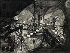

|
26 July 2003 - 12 October 2003
York City Art Gallery
1 November to 7 December 2003
Milton Keynes Gallery
20 December 2003 - 29 February 2004
Victoria Art Gallery, Bath
|

Giovanni Battista Piranesi, Carceri, Plate XI, an etching, Italy, AD 1761 (later state)
|
|
|
Giovanni Battista Piranesi (1720-1778) is best known for his virtuoso etchings, which opened up new vistas in the world of architectural fantasy. His visionary works developed out of his early training as a theatrical designer in his native Venice.
The centrepiece of this exhibition is the artist's celebrated series of etchings, Imaginary Prisons (Carceri d'Invenzione). These images of dark cavernous spaces traversed by vertiginous walkways have a nightmarish quality that gripped the imagination of Romantic artists, and their influence can still be felt in cinematic visions of dystopian cities of the future. Just over a decade after their first appearance in 1750, Piranesi returned to the Imaginary Prisons series, darkening them both literally and figuratively.
The fourteen original etchings are shown alongside the reworked versions providing a unique insight into the creative process of one of the most influential artists of his age. In addition, the show features some of the finest of the British Museum's superb collection of Piranesi drawings. The artist's drawings combine spectacular flights of imagination in the creation of architectural visions with extraordinary technical virtuosity in the fluid handling of pen, wash and red chalk. Through them the artist's progress from conventional scenographer to his establishment in Rome as one of Italy's most original artistic talents can be traced.
|
|